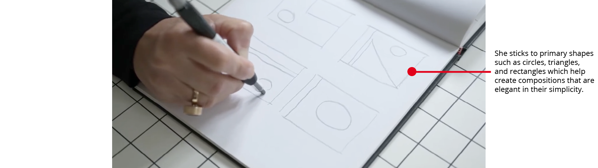
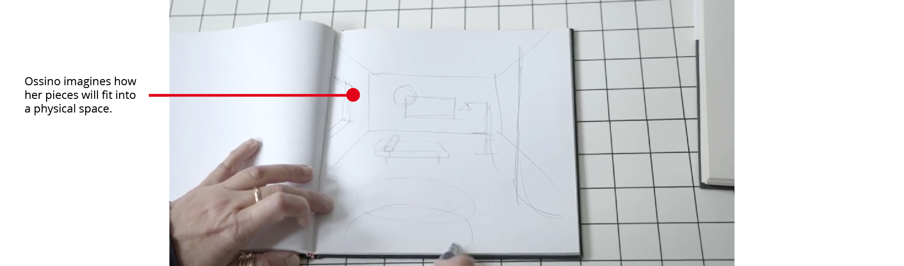
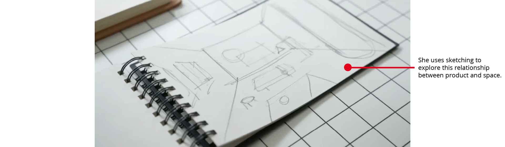
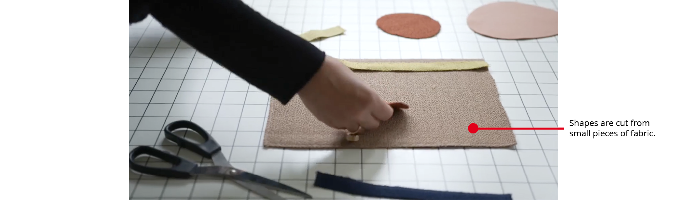
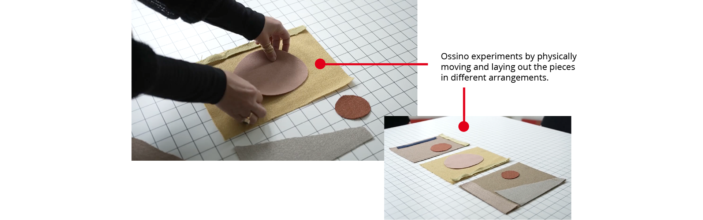
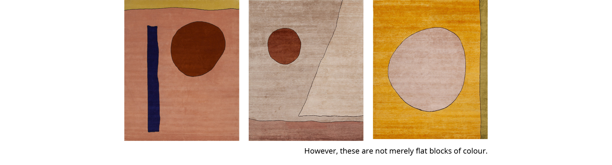
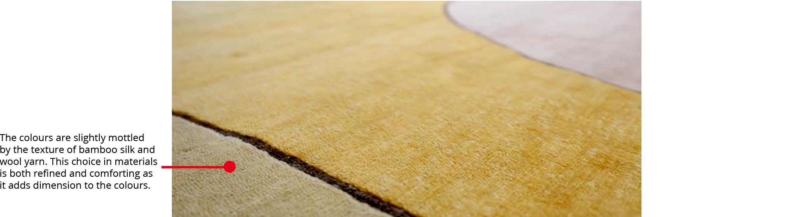
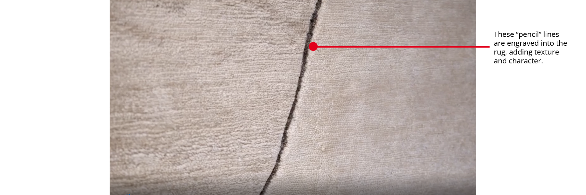
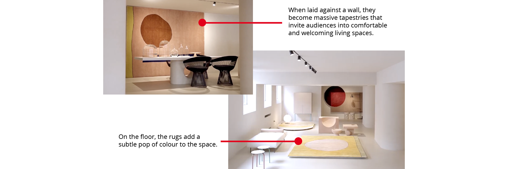

Ritagli
Ossino’s skillful command of simple geometric shapes is evident in the rug collection Ritagli. Starting her process with pencil on paper, she iterates through hand-drawn sketches.
  Moving onto textiles, miniature fabric collages are created to plan out the final rugs.
 She uses a limited colour palette for each rug, where muted tones are contrasted with brighter and bolder colours.
 The hand-drawn lines from the sketches remain in the final project, where the slightly rugged lines give the piece a friendly, human, and cozy feel.
When laid out in a space, the rugs can be placed on the floor or against the wall. Their abilities to transform a space are therefore versatile.
The graceful combination of geometry and colour gives Ritagli a delicate timelessness.